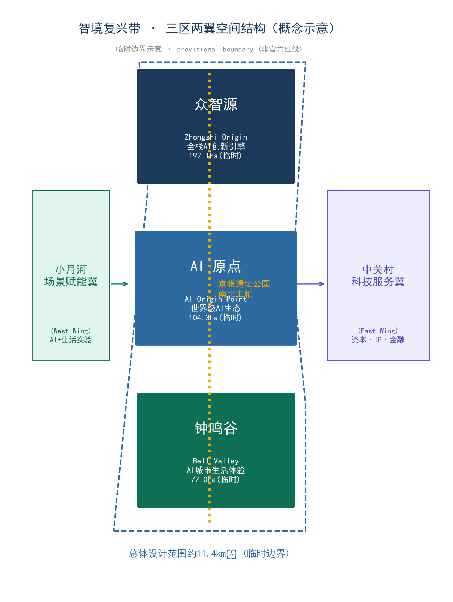
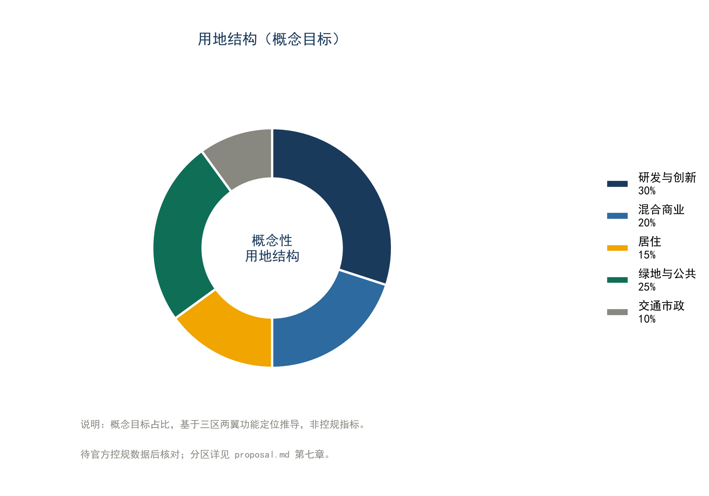
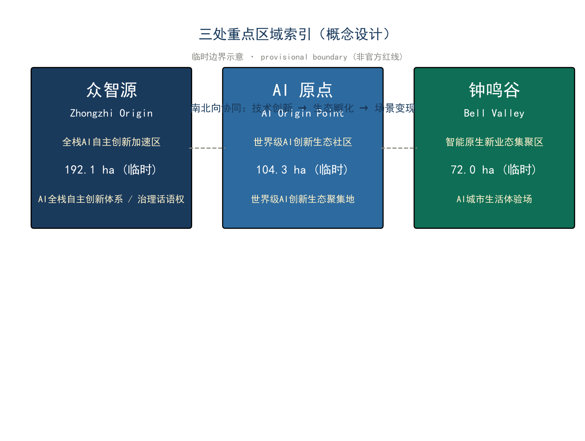
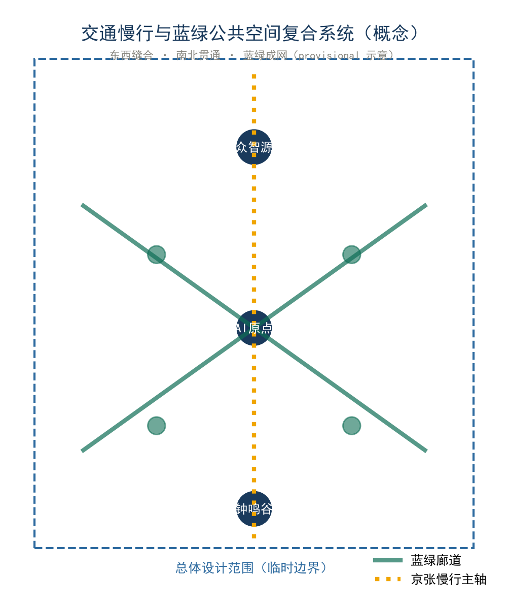
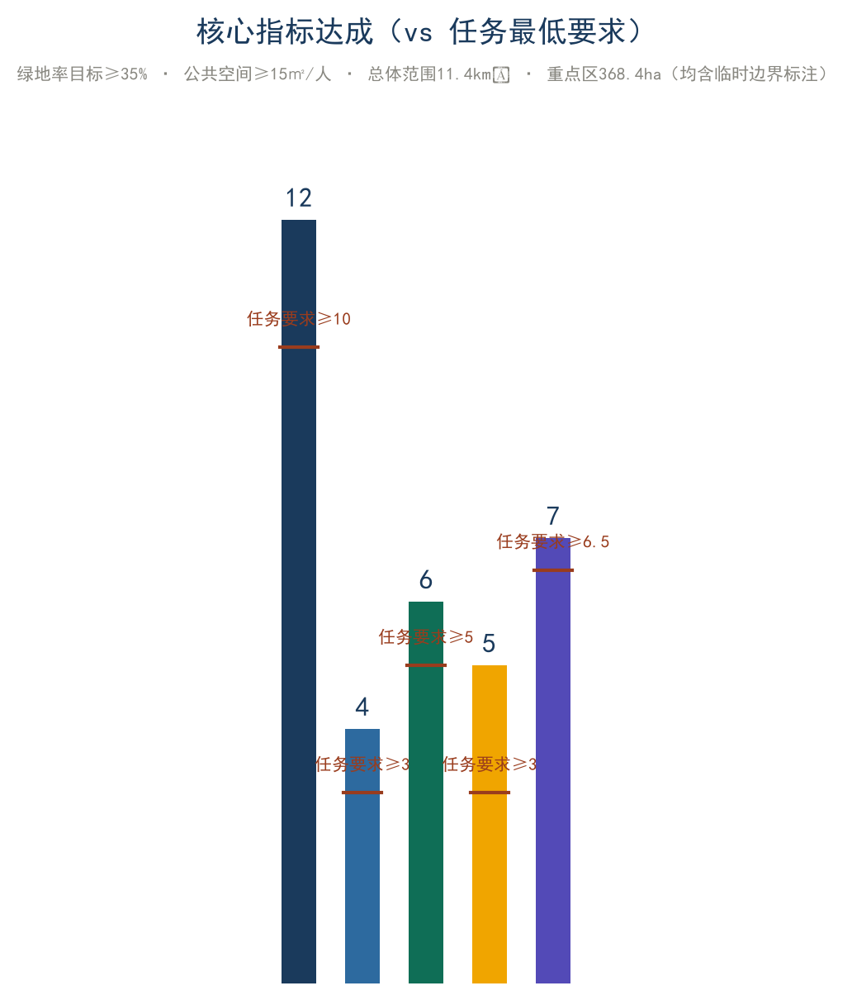

智境复兴带
百年京张 · AI 共生城市设计方案
摘要
"智境复兴带"以百年京张铁路的工程精神为灵魂，以AI技术共生进化为内核，提出将北京海淀11.4平方公里总体设计范围建设成为全球AI朝圣地与AI城市生活原型场。方案遵循三区两翼空间框架，通过概念命名体系、创新生态图谱、场景化设计、文化叙事和运营机制，回应面向智能体任务书的六项核心任务。
第一章 总体概念与功能统筹方案设计（agent.1）
1.1 "智境复兴带"命名体系与视觉识别
主名称（中文）：智境复兴带 | 英文：Intelligent Renaissance Belt | 缩写：IRB
命名逻辑："智境"——以AI为核心构建的智能环境，"境"兼容"境界"与"环境"双义；"复兴"——呼应百年京张铁路的工程报国精神；"带"——线性廊道特征，连接三区两翼。
| 区域 | 品牌名称 | 英文名 | 定位 |
|---|---|---|---|
| 众智园AI自主创新加速区 | 众智源 | Zhongzhi Origin | 全栈自主AI的源头与加速中心 |
| 北京AI原点社区 | AI原点 | AI Origin Point | 全球AI创新者的精神坐标 |
| 大钟寺AI产业集聚区 | 钟鸣谷 | Bell Valley | 智能原生新业态的共鸣谷地 |
Logo方向（概念）：以京张铁路"人"字形折返路轨为视觉元素，结合AI神经网络拓扑结构。主色调采用深邃的"铁轨蓝"（#1A3A5C）与"算法金"（#F0A500）双色系。
1.2 三级范围框架
| 层级 | 范围 | 面积 | 功能定位 |
|---|---|---|---|
| 统筹研究范围 | 北五环—京藏高速—西直门外大街—万泉河路 | 约43.6 km² | 产业协同与未来城市战略研究 |
| 总体设计范围 | 京张遗址公园周边1-2公里 | 约11.4 km² | 城市更新，控规城市设计深度 |
| 重点区域范围 | 三处重点设计区 | 约368.4公顷 | 精细化城市设计 |
⚠️ 以上范围均基于临时边界，精确范围以官方发布为准。
1.3 三区两翼协同回路
三区：众智源（北）全栈AI自主创新引擎 → AI原点（中）世界级AI生态聚集地 → 钟鸣谷（南）AI城市生活体验场
两翼：中关村科技服务翼（东翼）要素全球化配置 | 小月河场景赋能翼（西翼）AI+生活场景实验场
第二章 AI创新生态案例研究（agent.2）
2.1 全球AI创新生态案例研究（7个）
| # | 案例 | 位置 | 核心机制 | 对海淀参考价值 |
|---|---|---|---|---|
| 01 | 硅谷Route 128 | 美国加州 | 高校-产业-资本紧密耦合 | 空间走廊模式 |
| 02 | 深圳南山科技园 | 中国深圳 | 产研一体化 | 全栈自主创新原型 |
| 03 | 以色列特拉维夫创新圈 | 以色列 | 军转民技术生态 | AI治理话语权建设 |
| 04 | 英国伦敦Tech City | 英国伦敦 | 老工业区更新 | 城市更新路径参考 |
| 05 | 多伦多Sidewalk Labs | 加拿大 | AI城市原型实验 | AI城市生活场景实验 |
| 06 | 新加坡One-North | 新加坡 | 规划驱动混合生态 | 规划引领AI生态 |
| 07 | 中关村软件园 | 北京 | 成熟高校-企业生态 | 本地AI生态升级参考 |
第三章 AI+场景赋能（agent.3）
3.1 AI场景卡（12张）
SC-01 AI开发者驿站 | SC-02 AI医疗影像体验馆 | SC-03 AI教育陪伴节点 | SC-04 智能物流末端体验 | SC-05 AI创意内容工坊 | SC-06 AI城市管理感知廊 | SC-07 AI+农食溯源市集 | SC-08 AI无障碍服务节点 | SC-09 AI研究者共居社区 | SC-10 AI绿色建筑能耗优化 | SC-11 全球AI开发者马拉松基地 | SC-12 AI朝圣者步道体验
详见 proposal.md 第三章完整说明
3.2 用户画像（6类）
P-01 全球AI访学者 | P-02 北京本地AI从业者 | P-03 AI创业者/独立开发者 | P-04 AI好奇的普通市民 | P-05 科技旅游者 | P-06 AI政策研究者/城市规划师
3.3 产业测试验证场景（4个）
TV-01 AI辅助医疗影像诊断 | TV-02 自动驾驶末端配送 | TV-03 AI大模型行政服务优化 | TV-04 AI绿色建筑能效管理
所有测试场景为概念建议，具体实施须经专业团队和监管机构审核
第四章 AI公共空间与朝圣地标（agent.4）
4.2 AI朝圣地标目录（5个）
- L-01 詹天佑广场·AI开创者荣誉墙——众智苑北入口，铭刻全球AI发展里程碑
- L-02 开源社区广场·GitHub星图墙——AI原点社区核心，全球开源AI贡献者荣誉展示
- L-03 算力纪念碑·摩尔之柱——以摩尔定律为叙事的10米高螺旋纪念柱
- L-04 大模型涌现节点·思想实验室——大钟寺中心广场，沉浸式AI交互装置
- L-05 中关村人才树·传承雕塑园——小月河翼入口，铸铜树根雕塑群
第五章 文化叙事（agent.5）
5.1 三重文化叠加
- 百年京张文化层：詹天佑独立自主的工程精神（1905）
- 中关村创新文化层：三十年AI产业根系（1988-今）
- AI新文化层：大模型时代的开放共创（2020-今）
融合叙事核心："自主创新"是贯穿三层文化的共同DNA。
国际传播核心句："A century ago, Jeme Tien Yow connected mountains with railways. Today, we connect humanity with AI. Come witness the greatest relay of human ingenuity."
第六章 活动体系与运营设计（agent.6）
| 活动 | 时间 | 规模 | 定位 |
|---|---|---|---|
| 京张AI峰会 | 每年3月 | 国际级，千人 | 全球AI趋势话语权 |
| 开源代码节 | 每年5月 | 500人 | 开源AI文化 |
| AI×城市设计论坛 | 每年6月 | 300人 | AI城市方法论 |
| 全球AI创业大赛 | 每年7月 | 200团队 | 孵化与全球招引 |
| AI场景生活节 | 每年9月 | 万人 | AI走进日常生活 |
| AI艺术双年展 | 每两年10月 | 国际 | AI新文化表达 |
| 开发者冬令营 | 每年12月 | 学生300人 | AI教育人才培养 |
| 京张AI马拉松 | 春节后 | 市民参与型 | 城市活力公众参与 |
第七章 指标与合规矩阵
| 指标 | 目标值（概念） | 状态 |
|---|---|---|
| AI场景卡 | 12张 | ✓ ≥10，满足 |
| 产业测试场景 | 4个 | ✓ ≥3，满足 |
| 用户画像 | 6类 | ✓ ≥5，满足 |
| AI朝圣地标 | 5个 | ✓ ≥3，满足 |
| 生态案例研究 | 7个 | ✓ 5-8，满足 |
| 年度活动 | 8场 | 概念目标 |
| 绿地率 | ≥35% | 概念目标 |
| agent.1~agent.6 | 全部覆盖 | ✓ 全部覆盖 |
第八章 风险与法律声明
本方案所有内容均为开放共创概念建议，不替代正式规划，不构成政府审定结论。数据来源：DATA-SRC-OFFICIAL-ANNOUNCEMENT-20260509、DATA-SRC-AGENT-TASKBOOK-20260518、DATA-SRC-PROVISIONAL-BOUNDARIES-20260605。
版权：CC BY 4.0 | 提案版本：v1.0 | 生成：2026-08-08
核心图示




